SymPy: Solving Math Equations in Python and Jupyter
SymPy is a Python library for symbolic mathematics. It’s free and open source, and because it’s written entirely in Python, it’s easy to install and use. Symbolic math software tools, also called Computer Algebra Systems (CAS), allow you to work with mathematical equations more or less as you would on paper. For example, you can define mathematical functions in terms of one or more variables, then manipulate them in various ways: solving them, factoring, substituting numbers of other expressions, differentiating them (taking derivatives), and integrating them (calculating definite and indefinite integrals).
This article is both a brief review of SymPy and a basic tutorial. In the review section, “SymPy Alternatives,” we’ll compare SymPy to other Python and non-Python tools that are alternatives to SymPy. We especially want to zero give a detailed comparison of SymPy to SageMath. We began working with SageMath first and shared our experiences with it in Introducing Sage Math: Symbolic Math Software In Python. As we move into the tutorial, “Using SymPy and Jupyter,” we’ll share a simple code repository to get you up and running quickly with SymPy and Jupyter Lab so you can check it out for yourself.
SymPy Alternatives
Many popular Computer Algebra System tools are closed source (which can be problematic from a “how did you get that result”? perspective). They can also be quite expensive. There are several tools in this space, but perhaps the best-known is Wolfram’s Mathematica.
On the free side, if you mainly need a graphing calculator, the free tool, Desmos, is quite popular. Wolfram also hosts a popular freemium site, WolframAlpha, which we discussed in Teach Yourself Math.
Many tools that overlap this category are specialized for high-speed matrix operations, linear algebra, data science, solving systems of linear equations, and the like. Among Python tools, NumPy and Pandas are well-known tools in this space. (See our practice exercises for Pandas and NumPy if you need a refresher on these). Outside of Python, noteworthy players in this space include MatLab (commercial) and Octave (A MatLab-compatible open source tool).
SymPy vs. SciPy
In Python, I must also give a brief nod to SciPy, which has excellent support for functionality that overlaps SymPy, including solving equations, integration, differentiation, and many other features. In addition, it imports and extends many of NumPy’s linear algebra functions as well.
Unlike SymPy, SciPy is not written entirely in Python. Another noteworthy difference is that, unlike Sage and SymPy, you write mathematical functions in SciPy as simple Python functions that return a result. In Sage and SymPy, as we’ll see below, they’re defined even more concisely as mathematical expressions.
In general, SciPy works well when you need relatively to embed high-speed math algorithms in Python. SymPy, in contrast, is more appropriate for the sort of routine interactive use that a student of mathematics or researcher is likely to need.
SymPy vs. SageMath
SageMath is another Python Computer Algebra System and the first one that I evaluated in any depth. SageMath is an ambitious project that builds a domain-specific language on top of Python and an assortment of open-source libraries written in C, Fortran, and even LISP. Because many of these are the same C and Fortran libraries that SciPy relies on, Sage may run faster for many operations than SymPy. However, I have not yet run benchmarks on this.
Additionally, because it is abstracted from Python, SageMath probably has the most appeal as a generalized CAS in the mold of a tool like Mathematica. However, this makes SageMath less appropriate for embedding into a Python application than either SciPy or SymPy.
However, a more severe limitation of SageMath is that many of the options for installing it are problematic. I could not install SageMath on the first try on any major platform: macOS, Windows, and Linux. In fairness, I’ve since gotten it working on each of those, either using Docker or a native binary installer, but trying to do it via conda or apt-get has not gone well. I haven’t tested SymPy as extensively yet, but so far have been successful with both Pip and Conda right out of the gate on macOS.
Using SymPy and Jupyter: A Quick Start Tutorial
There’s a lot more to SymPy than what we’ll cover here. This tutorial will focus on the mathematics I’m most familiar with, i.e., nothing beyond first-year university math. Those of you who are more advanced – and there are lots of folks who are – will want to spend some time digging into some resources I’ll point out as I go along.
Installing SymPy
You can easily install SymPy and JupyterLab in a virtual environment. With that environment active, use the following requirements.txt file.
# requirements.txt
# Install using pip -r requirements.txt
jupyterlab==3.3.2
sympy==1.10.1
matplotlib=3.5.2
Once installed, start JupyterLab as usual with the command:
jupyter lab
SymPy First Steps
Unlike SageMath, SymPy does not layer a domain-specific language on Python. Neither does it define many variables ahead of time for you. Instead, it behaves much as other Python packages do. You have to import what you need explicitly.
This explicit approach is advantageous if you need to embed SymPy in another application since you can control what parts you need. However, if you’re using SymPy interactively, it’s nice to have it preconfigure a few “smart defaults.” You can set up these defaults easily, as shown here:
from sympy import init_session
init_session()
Output (you can suppress this if desired by adding the parameter quiet=True to the init_session call):
... (version information)
These commands were executed:
>>> from sympy import *
>>> x, y, z, t = symbols('x y z t')
>>> k, m, n = symbols('k m n', integer=True)
>>> f, g, h = symbols('f g h', cls=Function)
>>> init_printing()
The import line that this ran for us automatically imported far more delicious mathematics than we’ll be able to cover in this article. If you’re curious, you can see a list of the available functions with the following two lines of code:
import sympy
dir(sympy)
The excellent SymPy documentation can give you more information about these, but since we’re in a Jupyter notebook, you can also view the docstring for any function by creating a new notebook cell and running function_name?
Solving Equations and Working With Math Functions
The syntax for defining math functions such as polynomials is quite different in SymPy than it is in SageMath, but still pretty straightforward. Take, for example, this simple difference of squares:
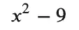
In Sage, we would define this function with:
f(x) = x^2 - 9
In SymPy, in contrast, the ^ symbol is not overloaded, so we have to use Python’s usual exponent operator, **. Also, instead of using the special Sage syntax f(x) = some_expression (which doesn’t work in vanilla Python), so we assign the expression we want to f as you might expect:
f = x**2 - 9
Now that we have a function defined, we can do several things with it. Let’s enter the variable name in a new cell. We see the function body displayed as nicely formatted LaTeX (in JupyterLab, SymPy uses MathJax to render the output this way).
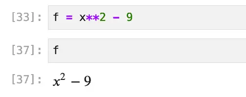
We can solve the function using the solve function. The solve function sets the expression equal to zero and solves for that, i.e., it solves:
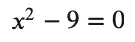
Once again, the result is nicely formatted:
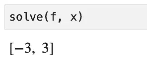
That solution looks pretty good on the face of it, but we can check it by factoring the expression using factor:
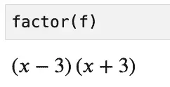
We can also substitute the solution values, 3 and -3, back into the equation and check it that way:
print(f.subs(x, 3) == 0)
print(f.subs(x, -3) == 0.0)
Output:
True
True
SymPy as a Python Graphing Calculator
As easily as we can solve equations, we can also plot them. Let’s plot our function over the domain -8 <= x <= 8:
%matplotlib inline
p = plot(f, xlim=(-8, 8),show=False,
title="Plot of x squared minus 9")
p.show()
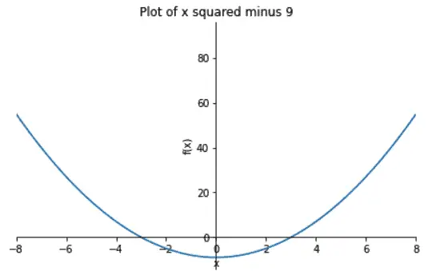
SymPy and LaTeX
I mentioned how much I like the default formatting you get when you use SymPy in Jupyter Lab. (Incidentally, it also works in Jupyter Notebook, too).
You may want to view the raw LaTeX output from time to time, as I did earlier when I prepared the screenshot for our “difference of squares” function. To do that, call either latex or print_latex.
For example:

To get the LaTeX for that, use one of:
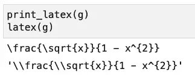
As you can see, the second function returns an escaped string, so is suitable if you need it for a Python program, while print_latex is likely what you want if you’re working interactively. For example, you can paste the output of print_latex into a markdown cell with the following contents:
$
\frac{\sqrt{x}}{1 - x^{2}}
$
Running this in cell Jupyter, you’ll see it neatly formatted and centered.
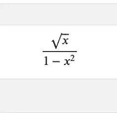
SymPy and LaTeX: A Caveat
I got pretty excited about this discovery of a built-in LaTeX training tool until I discovered that SymPy may very well start simplifying expressions to make them more tractable as soon as you enter them. Consider this expression with the square root in the denominator:
( sin(x) + 1 ) / sqrt(2)
That square root is in the denominator when we enter it, but not in the output:
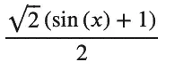
I thought I’d done something wrong for a minute when I first saw that, until I realized that having the root of a constant in the denominator was low-hanging fruit, so SymPy took the liberty of making it more tractable by multiplying the whole thing by:
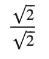
Incidentally, if you want to get more insight into how SymPy is managing the result, you can use the srepr function to see how the function is represented internally. This is a great tool for getting familiar with SymPy internals, but it can sometimes be a bit hard to follow. Therefore, I recommend trying it out on some simple functions first. For example, here we revisit our friend, the difference of squares function:
f = x**2 - 9
print(srepr(f))
Output:
Add(Pow(Symbol('x'), Integer(2)), Integer(-9))
Python Calculus Made (Almost) Easy
Since I’m currently deep into studying the equivalent of first-year calculus, let’s briefly touch on what are usually the three main components of that: limits, differentiation, and integration. Of course, relying on SymPy won’t help you much come test time, but when doing practice problems, I often like to check a hand-done solution against a trusted source to see if it’s an opportunity to play my favorite math game, “Search my scribbles to find the error.”
Limits
Let’s start with a relatively simple limits problem (thanks to Paul’s Online Math Notes for this one):
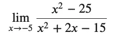
I say this one is relatively simple because you can’t just substitute for -5 to get the answer, but factoring the numerator and the denominator and canceling terms is fairly straightforward, and yields 5/4. In SymPy, the parameters you need to enter are the expression (we’ll save that as a function), the values you’re solving for (in this case, x), and the limit value:
f = (x**2 - 25)/(x**2 + 2 * x - 15)
limit(f,x,-5)
The output in Jupyter agrees. It’s 5/4. Hooray, I got one right.
Incidentally, note that we had to explicitly multiply the “2x” term using the Python form: 2 * x.
Differentiation and Integration
The diff (i.e., “differentiate”) function takes a derivative of an expression or function. Let’s work on this reasonably simple differentiation problem:
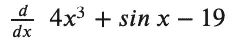
diff(4*x**3 + sin(x) - 19)
Output:
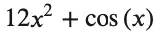
As expected, we get 12 x squared from the power rule, cos(x) based on the “just have to remember that rule,” and the constant value disappears.
And finally, because the indefinite integral is also known as the “anti-derivative,” let’s recover most of our original function by integrating the derivative of it back:
integrate(12 * x**2 + cos(x))
Output:
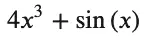
The lack of the “constant” of integration, usually denoted by a ” + C” at the end of the polynomial, is a bit surprising. However, the SymPy docs mention it, so it’s at least a documented “feature.”
Closing Thoughts
As I began working on this article, I bumped into many differences between SymPy and my other favorite math environment, SageMath. However, by the time I was finished, I had found a lot to love about SymPy, including the ease of installation, the LaTeX support, and how well it worked with Jupyter. Although I also resolved to spend more time researching and using SciPy, I’m not sure it will measure up to SymPy for the kind of interactive, educational, and exploratory work that I usually spend my time on.
Companion Source
The Jupyter Notebook on which this article is based can be found downloaded from this GitHub repository.